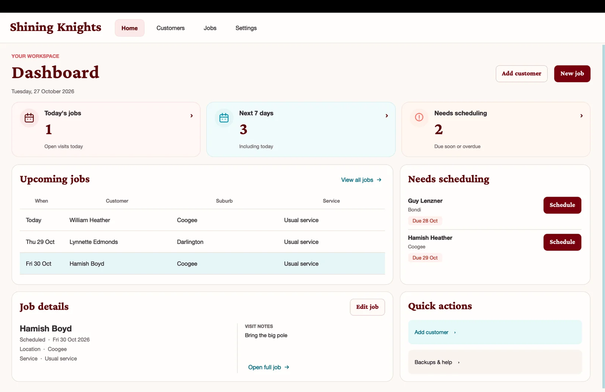
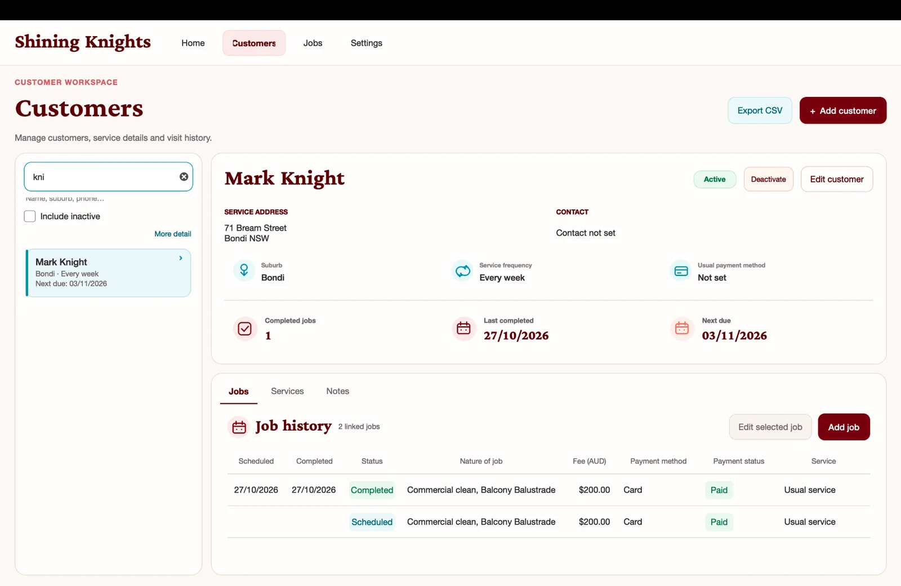
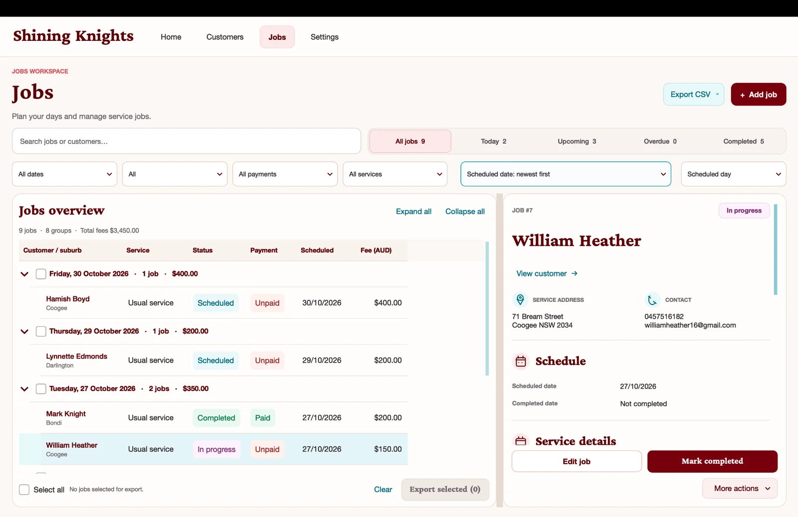
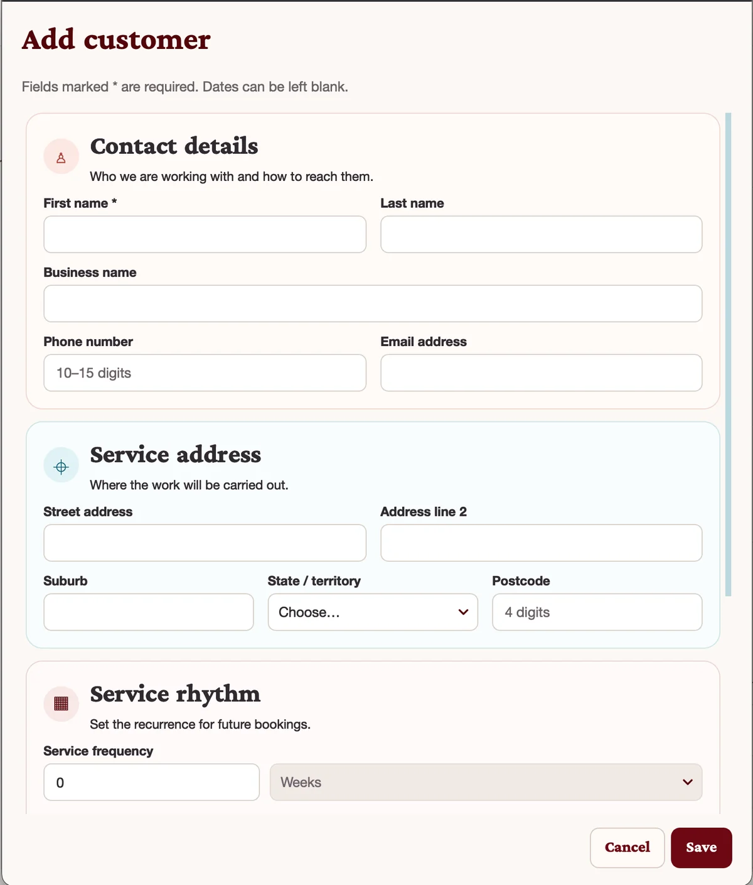
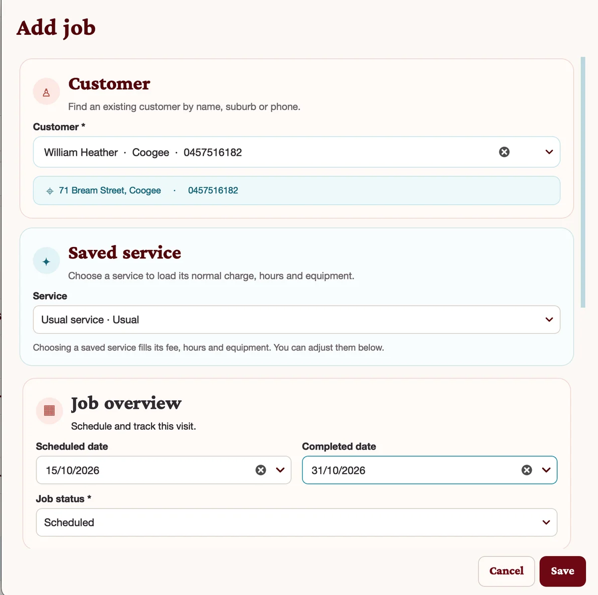
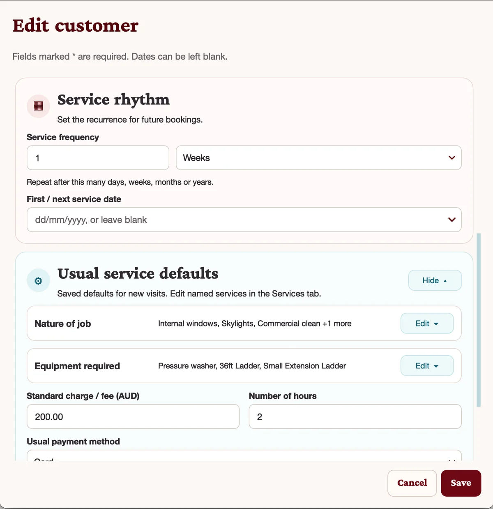
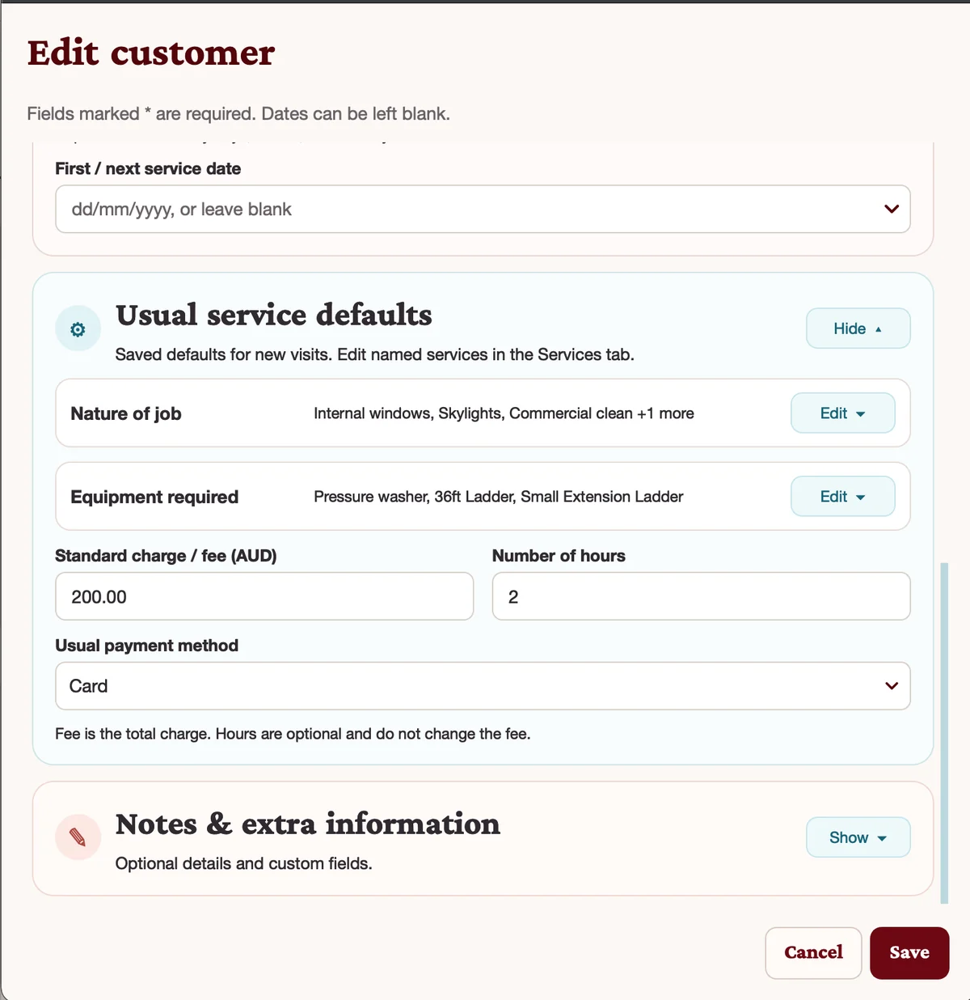

Structured customer records
Customer pages combine contact details, service location, frequency, status and linked history in one interface.

A desktop management system for a service business, bringing customer records, recurring service defaults and job scheduling into one organised workflow. Shining Knights was redesigned to make day-to-day operations clearer, faster and easier to manage.
The redesigned interface gives staff a clear home base for today's jobs, upcoming work, scheduling pressure and quick actions, while keeping customer and job detail only a click away.

A service business does not just need a customer list. It needs recurring service settings, saved job defaults, upcoming scheduling visibility and a practical way to move from a customer record to an actual visit on the calendar.
Shining Knights was redesigned to make those relationships clearer. The interface connects the core operational entities — customers, services and jobs — so staff can review a client, load their usual service settings and manage work in a more structured way.
The application supports the full everyday loop: capturing customer information, storing default service settings, scheduling visits and reviewing job history.
Store contact details, service address and the rhythm for repeat visits.
Keep the usual nature of job, equipment, charge, hours and payment method ready for future bookings.
Load saved service settings into a job, track status and review what still needs planning.
Move between job lists, customer history and current visit details without re-entering the same information.
Customer pages combine contact details, service location, frequency, status and linked history in one interface.
Usual service settings reduce repeated data entry and help keep charges, hours, equipment and payment details consistent.
The jobs workspace supports searching, filtering, grouped viewing, scheduling and simple export actions for administration.
Built with Python, PySide6 and SQLite, with modular UI work and testing aimed at preserving function while the interface evolves.
These screens show the customer workspace, add/edit flows and jobs interface. The records shown are fictional demonstration data created for portfolio use.






All screenshots show fictional names, addresses, dates and records prepared for portfolio presentation.
The redesign focused on making the application feel more deliberate and easier to navigate, especially across the Home, Customers and Jobs workspaces. Information hierarchy was strengthened, forms were reorganised into clearer sections and linked data was presented more coherently.
Underneath the visual refresh, the application remains a practical Python desktop system with a local database, reusable form logic and support for recurring service information, job history and day-to-day administration.
The project demonstrates more than a simple CRUD interface. It shows how a domain-specific workflow can be modelled in software: one customer may have ongoing service expectations, those defaults can influence future jobs and scheduling needs can be surfaced as operational priorities.